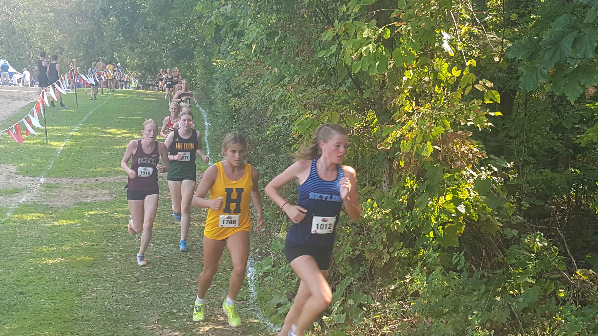
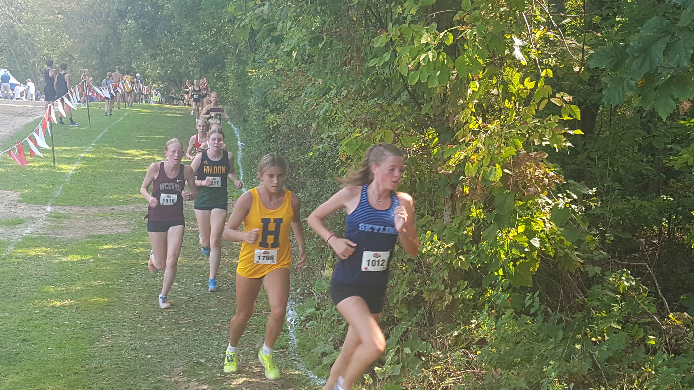

Race Summary
The Skyline team performed admirably at the 37th Early Bird Open, securing 7th place overall with a team score of 186. Notable individual performances include several athletes who achieved personal records (PRs). Matthew Guikema led the team with a time of 17:35.10, followed closely by Nicholas Yuan at 17:44.40. Zeke Lafferty, Jack Robichaud, and Gustaf Finn rounded out the top five for Skyline, contributing to the team's tight spread between runners. Other athletes who achieved PRs include Oskar MacArthur (18:37.50), Grayson Crooks (19:37.10), Juan Luis Llanes (19:48.00), and Paxton Alicandro (21:13.00). This race showcased the team's strong depth and improvement as they continue the season.
Team Results
| Place | Team | Score |
|---|---|---|
| 1 | Livonia Churchill | 95 |
| 2 | Ann Arbor Pioneer | 126 |
| 3 | White Lake Lakeland | 127 |
| 4 | Plymouth | 134 |
| 5 | Ann Arbor Huron | 164 |
| 6 | Romeo | 186 |
| 7 | Ann Arbor Skyline | 244 |
| 8 | Grand Blanc | 247 |
| 9 | Mason | 280 |
| 10 | South Lyon | 291 |
| 11 | South Lyon East | 318 |
| 12 | Fenton | 327 |
| 13 | Fraser | 346 |
| 14 | Whitmore Lake | 467 |
| 15 | Waterford Kettering | 477 |
| 16 | North Farmington | 504 |
| 17 | Ypsilanti Community | 546 |
| 18 | Waterford Mott | 551 |
Individual Results

Athlete Stats
Place: 23.
Time: 17:35.10
Grade: 10

Athlete Stats
Place: 28.
Time: 17:44.40
Grade: 10

Athlete Stats
Place: 40.
Time: 18:07.30
Grade: 11

Athlete Stats
Place: 47.
Time: 18:23.70
Grade: 12

Athlete Stats
Place: 50.
Time: 18:28.20
Grade: 11

Athlete Stats
Place: 58.
Time: 18:37.50
Grade: 9

Athlete Stats
Place: 62.
Time: 18:42.70
Grade: 9

Athlete Stats
Place: 74.
Time: 18:59.90
Grade: 11

Athlete Stats
Place: 77.
Time: 19:01.80
Grade: 12

Athlete Stats
Place: 85.
Time: 19:14.70
Grade: 10

Athlete Stats
Place: 86.
Time: 19:15.60
Grade: 10

Athlete Stats
Place: 88.
Time: 19:17.30
Grade: 11

Athlete Stats
Place: 109.
Time: 19:48.00
Grade: 11

Athlete Stats
Place: 112.
Time: 19:52.10
Grade: 11

Athlete Stats
Place: 114.
Time: 19:55.40
Grade: 9

Athlete Stats
Place: 121.
Time: 20:03.40
Grade: 10

Athlete Stats
Place: 128.
Time: 20:13.20
Grade: 12

Athlete Stats
Place: 161.
Time: 21:04.20
Grade: 10

Athlete Stats
Place: 228.
Time: 23:16.10
Grade: 10

Athlete Stats
Place: 248.
Time: 23:51.40
Grade: 9
Gallery
View Gallery


 
